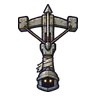

ยามหอคอยกลวง · ร่างยามซีด
มอนธาตุอมตะ Lv 38–48
เจอที่
| แมพ | โซน | Lv | ภูมิภาค |
|---|---|---|---|
| หอสังเกตการณ์ริมด่าน | 38–48 | ดินแดนเหนือ |
ค่าสถานะตามเลเวล
| Lv | HP | ATK | DEF | MDEF | EXP | Job |
|---|---|---|---|---|---|---|
| 38 | 8,417 | 87–129 | 13 | 9 | 101 | 76 |
| 43 | 11,925 | 101–151 | 14 | 10 | 112 | 84 |
| 48 | 16,267 | 112–167 | 16 | 12 | 124 | 93 |
ตีด้วยธาตุไหนดี
แรงขึ้น: ศักดิ์สิทธิ์ ×1.5 ไฟ ×1.25
เบาลง: พิษ ×0 มืด ×0 อมตะ ×0
วัตถุดิบที่ดรอป
| ของ | โอกาส | |
|---|---|---|
| ลูกดอกหน้าไม้หัก | 82% | 1 ชิ้น (15% ได้ 2) |
อุปกรณ์ที่ดรอป (1)
| ของ | โอกาส |
|---|---|
 หน้าไม้ยามหอคอยกลวง | 0.12% |
สกิล
ยิงกระจาย (Lv 25+) · ยิงกระจาย (Lv 60+) · ปาตกใส่ (Lv 60+)